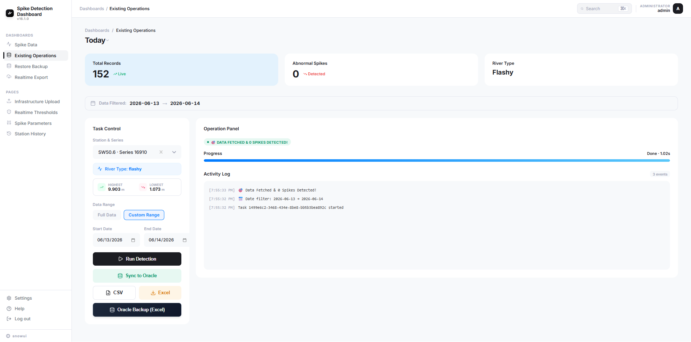
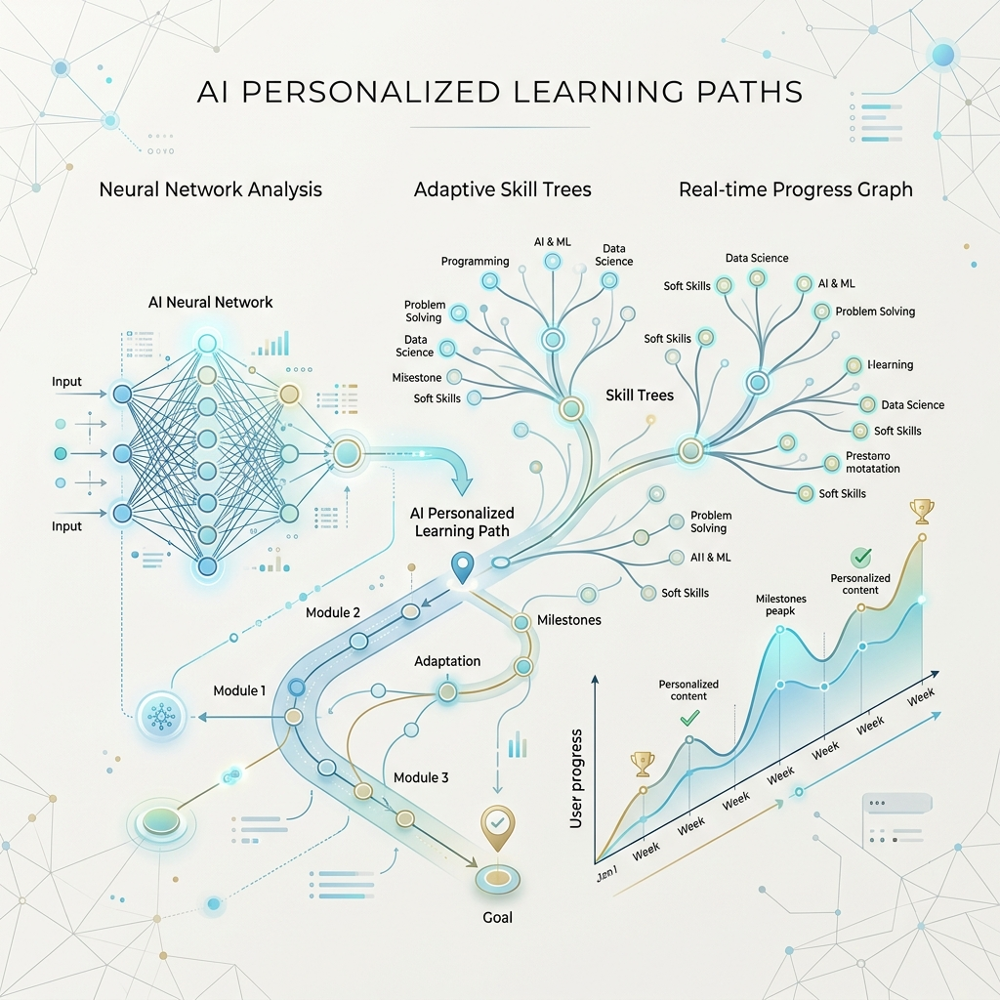
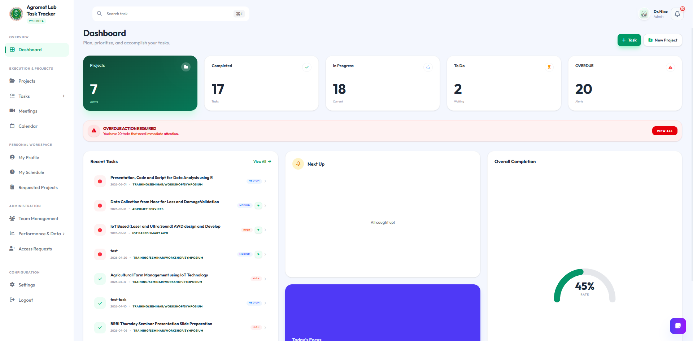
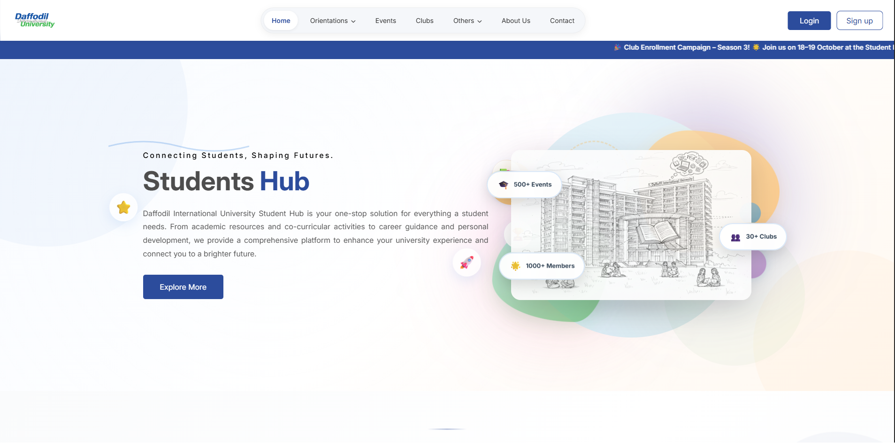
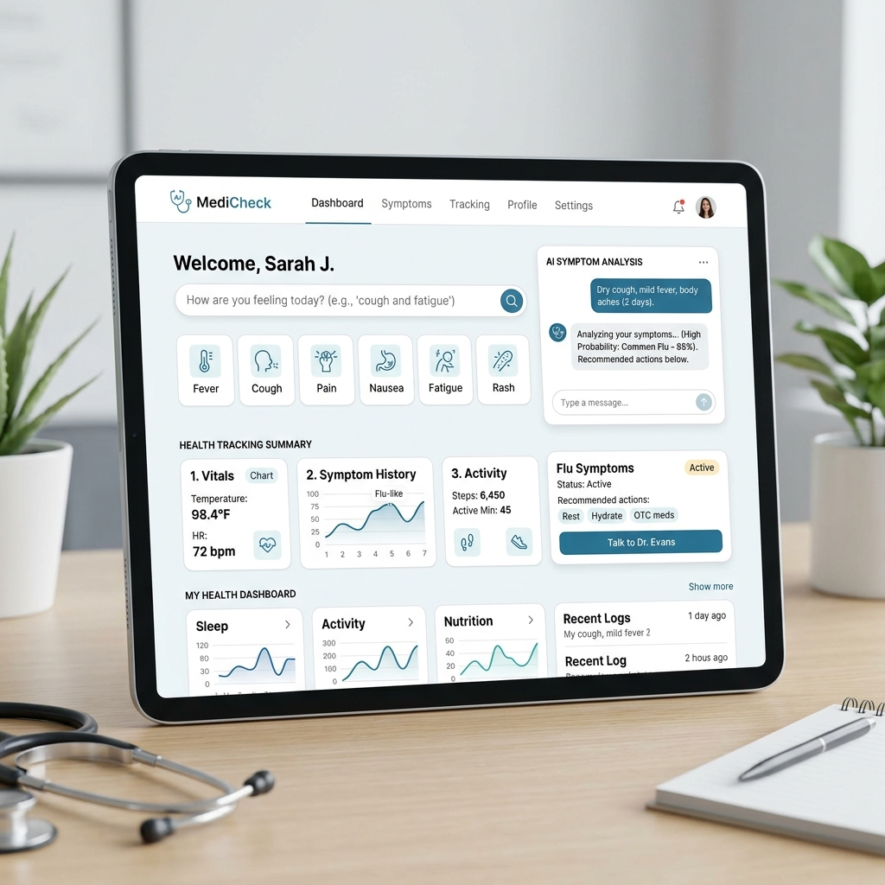

Hello, I'm
Md Siam Hossain
Full-Stack Software & Data Science Engineer
Building production-first intelligent systems with mathematical rigor, robust backend architectures, and end-to-end scalable ML deployment.

Hello, I'm
Full-Stack Software & Data Science Engineer
Building production-first intelligent systems with mathematical rigor, robust backend architectures, and end-to-end scalable ML deployment.
Get To Know More

Data Science Engineer
Datasoft Manufacturing & Assembly Inc Ltd (DMA)
Student Associate
DIU Students' Affairs (DSA)
B.Sc. in Computer Science & Eng.
Daffodil International University
I am a production-first Full-Stack Software Engineer and Data Science Engineer with deep expertise across backend architectures, full-cycle AI deployment, and enterprise software engineering. Grounded in peer-reviewed research, my development philosophy values robust maintainability, scalable API systems, and mathematical rigor. Whether building hydrological anomaly detection systems for national agencies or architecting campus infrastructure serving over 30,000 active users, I design code that runs efficiently under high load.
Declaring My Technical Range
My Professional Journey
Browse My Production Artifacts

Engineered algorithmic phase-aware range tracking for national hydrographic stations to filter real-time anomalies. Utilized Cubic Spline and Linear interpolation for data gap restorations.

Built Deep Knowledge Tracing models with LSTM networks over 829,000+ interactions. Deployed DQN Reinforcement Learning agent for skill-based recommendations.

Architected custom scheduling environment, featuring a composite KPI leaderboard to evaluate and rank academic contributors based on timeliness, quality, efficiency, and reliability.

Contributed to full-stack Laravel development, engineering a centralized hub, a dynamic Portfolio & CV Generator, an Event Management system, and AI-driven Club & Psychology agents.
Co-designed NFC transport monitoring system sending real-time route alerts. Optimized POS firmware parameters to significantly decrease daily power draw.
Built automated railway track barriers using sensor-fusion automation. Programmed localized sensor-failure fallbacks and remote override dashboards.

Built an Artificial Neural Network tool integrated into a Django web application for automated symptom-based disease predictions.
Academic & Competitive Achievements
Published at IEEE QPAIN 2025. Proposes real-time NFC-based transport systems and optimized power efficiency strategies for POS hardware.
View Paper (DOI: 10.1109/QPAIN66474.2025.11172262)Published in Intelligent Networks and Systems (Chapman and Hall/CRC). Presents failsafe automated railway grids using local sensor nodes.
Awarded for Individual Water Billing System (IWBS) monitoring unit water depletion patterns and mobile app billing integration.
Awarded for the Smart Railway Crossing System prototype demonstrating robust sensor fault diagnostics.
Led technical classes on data acquisition, network/security setups, big data integration, and system infrastructure scalability.
Let's Collaborate
I am always open to exploring complex technical architectures, advanced AI engineering challenges, or full-stack software initiatives.